<!DOCTYPE html
  PUBLIC "-//W3C//DTD HTML 4.01 Transitional//EN">

<html><html><body><div class="banner"><a href="../../../../index.html"></a></div></body></html><head>
<meta content="text/html; charset=utf-8" http-equiv="Content-Type"/>
<!--
This HTML was auto-generated from MATLAB code.
To make changes, update the MATLAB code and republish this document.
      --><title>Parametric Amplifiers</title><meta content="MATLAB 9.14" name="generator"/><link href="http://purl.org/dc/elements/1.1/" rel="schema.DC"/><meta content="2023-09-02" name="DC.date"/><meta content="Parametric_Amplifiers.m" name="DC.source"/><style type="text/css">
html,body,div,span,applet,object,iframe,h1,h2,h3,h4,h5,h6,p,blockquote,pre,a,abbr,acronym,address,big,cite,code,del,dfn,em,font,img,ins,kbd,q,s,samp,small,strike,strong,tt,var,b,u,i,center,dl,dt,dd,ol,ul,li,fieldset,form,label,legend,table,caption,tbody,tfoot,thead,tr,th,td{margin:0;padding:0;border:0;outline:0;font-size:100%;vertical-align:baseline;background:transparent}body{line-height:1}ol,ul{list-style:none}blockquote,q{quotes:none}blockquote:before,blockquote:after,q:before,q:after{content:'';content:none}:focus{outine:0}ins{text-decoration:none}del{text-decoration:line-through}table{border-collapse:collapse;border-spacing:0}

html { min-height:100%; margin-bottom:1px; }
html body { height:100%; margin:0px; font-family:Arial, Helvetica, sans-serif; font-size:10px; color:#000; line-height:140%; background:#fff none; overflow-y:scroll; }
html body td { vertical-align:top; text-align:left; }

h1 { padding:0px; margin:0px 0px 25px; font-family:Arial, Helvetica, sans-serif; font-size:1.5em; color:#d55000; line-height:100%; font-weight:normal; }
h2 { padding:0px; margin:0px 0px 8px; font-family:Arial, Helvetica, sans-serif; font-size:1.2em; color:#000; font-weight:bold; line-height:140%; border-bottom:1px solid #d6d4d4; display:block; }
h3 { padding:0px; margin:0px 0px 5px; font-family:Arial, Helvetica, sans-serif; font-size:1.1em; color:#000; font-weight:bold; line-height:140%; }

a { color:#005fce; text-decoration:none; }
a:hover { color:#005fce; text-decoration:underline; }
a:visited { color:#004aa0; text-decoration:none; }

p { padding:0px; margin:0px 0px 20px; }
img { padding:0px; margin:0px 0px 20px; border:none; }
p img, pre img, tt img, li img, h1 img, h2 img { margin-bottom:0px; }

ul { padding:0px; margin:0px 0px 20px 23px; list-style:square; }
ul li { padding:0px; margin:0px 0px 7px 0px; }
ul li ul { padding:5px 0px 0px; margin:0px 0px 7px 23px; }
ul li ol li { list-style:decimal; }
ol { padding:0px; margin:0px 0px 20px 0px; list-style:decimal; }
ol li { padding:0px; margin:0px 0px 7px 23px; list-style-type:decimal; }
ol li ol { padding:5px 0px 0px; margin:0px 0px 7px 0px; }
ol li ol li { list-style-type:lower-alpha; }
ol li ul { padding-top:7px; }
ol li ul li { list-style:square; }

.content { font-size:1.2em; line-height:140%; padding: 20px; }

pre, code { font-size:12px; }
tt { font-size: 1.2em; }
pre { margin:0px 0px 20px; }
pre.codeinput { padding:10px; border:1px solid #d3d3d3; background:#f7f7f7; }
pre.codeoutput { padding:10px 11px; margin:0px 0px 20px; color:#4c4c4c; }
pre.error { color:red; }

@media print { pre.codeinput, pre.codeoutput { word-wrap:break-word; width:100%; } }

span.keyword { color:#0000FF }
span.comment { color:#228B22 }
span.string { color:#A020F0 }
span.untermstring { color:#B20000 }
span.syscmd { color:#B28C00 }
span.typesection { color:#A0522D }

.footer { width:auto; padding:10px 0px; margin:25px 0px 0px; border-top:1px dotted #878787; font-size:0.8em; line-height:140%; font-style:italic; color:#878787; text-align:left; float:none; }
.footer p { margin:0px; }
.footer a { color:#878787; }
.footer a:hover { color:#878787; text-decoration:underline; }
.footer a:visited { color:#878787; }

table th { padding:7px 5px; text-align:left; vertical-align:middle; border: 1px solid #d6d4d4; font-weight:bold; }
table td { padding:7px 5px; text-align:left; vertical-align:top; border:1px solid #d6d4d4; }


  </style></head><body><div class="content"><h1>Parametric Amplifiers</h1><!--introduction--><!--/introduction--><h2>Contents</h2><div><ul><li><a href="#4">Dynamical system setup</a></li><li><a href="#5">Add forcing</a></li><li><a href="#6">Linear Modal Analysis</a></li><li><a href="#8">Forced response curves using SSMs</a></li><li><a href="#12">Verification: Collocation using <a href="https://sourceforge.net/p/cocotools/wiki/Home/">coco</a></a></li></ul></div><p>The model features two oscillators, each of which resembels the model of a parametric amplifier as presented by</p><p>Li, D. &amp; Shaw, S. W. The effects of nonlinear damping on degenerate parametric amplification.NonlinearDynamics 2020 102:4102,2433–2452 (4 Dec. 2020) <a href="https://doi.org/10.1006/jsvi.1995.0547">https://doi.org/10.1006/jsvi.1995.0547</a></p><p>The model is extended to a two- dimensional setting</p><p>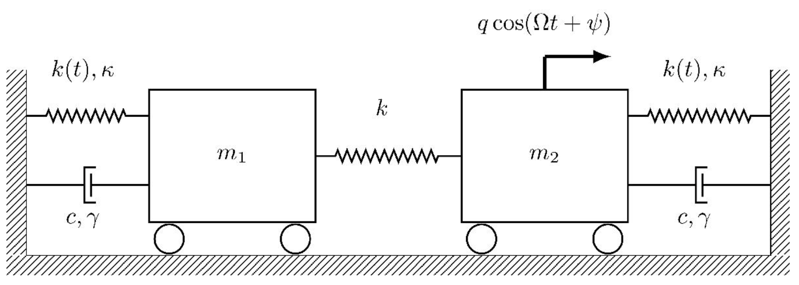 </p><p>The parametric excitation of the linear stiffness is of the form 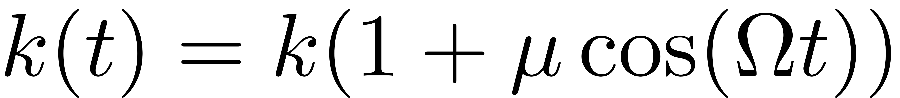. The system is subject to nonlinear stiffness and damping forces via  and 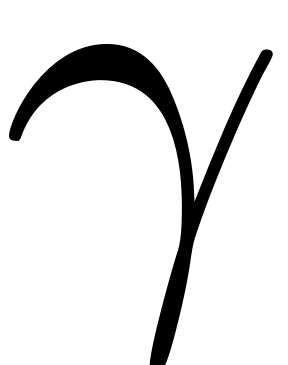.</p><p><b>system parameters</b></p><pre class="codeinput">clear <span class="string">all</span>
mus = [0.05, 0.05+1/3*0.1, 0.05+2/3*0.1 0.15]
psi = pi/4;

ii = 1;

<span class="keyword">for</span> mu = mus
</pre><pre class="codeinput">[ M,C,K,fnl,fext] = build_model(psi,mu);
</pre><h2 id="4">Dynamical system setup</h2><p>We consider the forced  and parametrically excited system</p><p>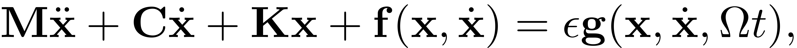</p><p>which can be written in the first-order form as</p><p>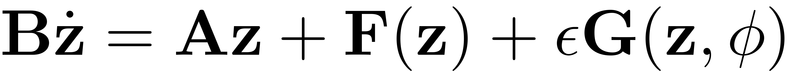</p><p>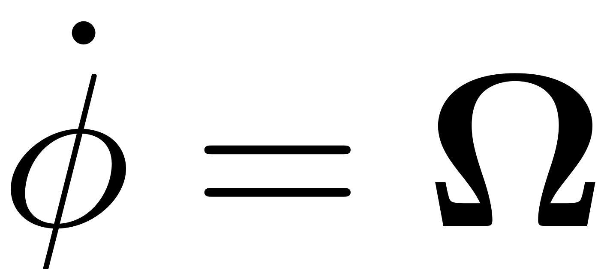</p><p>where</p><p>.</p><pre class="codeinput"><span class="comment">% Dynamical System</span>
DS = <a href="../../../../Library/DynamicalSystem/DynamicalSystem.html">DynamicalSystem</a>();
set(DS,<span class="string">'M'</span>,M, <span class="string">'C'</span>, C, <span class="string">'K'</span>,K,<span class="string">'fnl'</span>,fnl);
set(DS.<a href="../../../../Library/Features/Options/Options.html">Options</a>,<span class="string">'Emax'</span>,5,<span class="string">'Nmax'</span>,10,<span class="string">'notation'</span>,<span class="string">'multiindex'</span>)
</pre><h2 id="5">Add forcing</h2><p>The dynamical system is forced externally and parametrically with</p><p></p><p>Parameters are chosen as 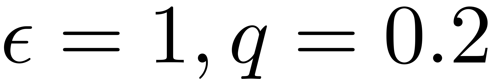</p><pre class="codeinput"><span class="comment">% External forcing</span>
DS.<a href="../../../../Library/DynamicalSystem/add_forcing.html">add_forcing</a>(fext,1);
</pre><h2 id="6">Linear Modal Analysis</h2><pre class="codeinput"><span class="comment">% Analyse spectrum</span>
[V,D,W] = DS.<a href="../../../../Library/DynamicalSystem/linear_spectral_analysis.html">linear_spectral_analysis</a>();
</pre><pre class="codeoutput">
 The first 4 nonzero eigenvalues are given as 
  -0.0100 + 0.9999i
  -0.0100 - 0.9999i
  -0.0100 + 1.7320i
  -0.0100 - 1.7320i

</pre><p><b>Choose Master subspace (perform resonance analysis)</b></p><pre class="codeinput">S = <a href="../../../../Library/SSM/SSM.html">SSM</a>(DS);
set(S.<a href="../../../../Library/Features/Options/Options.html">Options</a>, <span class="string">'reltol'</span>, 0.5,<span class="string">'notation'</span>,<span class="string">'multiindex'</span>)

<span class="comment">%Choose Master subspace</span>
masterModes = [1,2];
S.<a href="../../../../Library/Manifold/choose_E.html">choose_E</a>(masterModes);
</pre><pre class="codeoutput">sigma_out = 1
sigma_in = 1
</pre><h2 id="8">Forced response curves using SSMs</h2><p>Obtaining <b>forced response curve</b> in reduced-polar coordinate</p><pre class="codeinput">order = 5; <span class="comment">% Approximation order</span>
</pre><p>setup options</p><pre class="codeinput">outdof = [1,2];
set(S.<a href="../../../../Library/Features/Options/Options.html">Options</a>, <span class="string">'reltol'</span>, 0.5,<span class="string">'IRtol'</span>,0.02,<span class="string">'notation'</span>, <span class="string">'multiindex'</span>,<span class="string">'contribNonAuto'</span>,true)
set(S.<a href="../../../../Library/Features/Options/Options.html">FRCOptions</a>, <span class="string">'nt'</span>, 2^7, <span class="string">'nRho'</span>, 200, <span class="string">'nPar'</span>, 200, <span class="string">'nPsi'</span>, 200, <span class="string">'rhoScale'</span>, 6 )
set(S.<a href="../../../../Library/Features/Options/Options.html">FRCOptions</a>, <span class="string">'method'</span>,<span class="string">'level set'</span>) <span class="comment">% 'continuation ep'</span>
set(S.<a href="../../../../Library/Features/Options/Options.html">FRCOptions</a>, <span class="string">'outdof'</span>,outdof)
</pre><p>choose frequency range around the master mode frequency</p><pre class="codeinput">omega0 = imag(S.E.spectrum(1));
OmegaRange =omega0*[0.9 1.2];

<span class="comment">%Omega dependence of non-autonomous coefficients</span>
set(S.<a href="../../../../Library/Features/Options/Options.html">FRCOptions</a>,<span class="string">'omDepNonAuto'</span>,true)
</pre><p>Extract forced response curve</p><pre class="codeinput">startFRCSSM = tic;
FRCs(ii).FRC  = S.<a href="../../../../Library/Features/Wrappers/cocoWrapper/extract_FRC.html">extract_FRC</a>(<span class="string">'freq'</span>,OmegaRange,order);
timings(ii).FRCSSM = toc(startFRCSSM);
figFRC = gcf;
</pre><h2>Parametric excitation amplitude: mu = 0.05</h2><pre class="codeoutput">*****************************************
Calculating FRC using SSM with master subspace: [1  2]
sigma_out = 1
sigma_in = 1
Manifold computation time at order 2 = 00:00:00
Estimated memory usage at order  2 = 7.90E-03 MB
Manifold computation time at order 3 = 00:00:00
Estimated memory usage at order  3 = 9.23E-03 MB
Manifold computation time at order 4 = 00:00:00
Estimated memory usage at order  4 = 1.14E-02 MB
Manifold computation time at order 5 = 00:00:00
Estimated memory usage at order  5 = 1.41E-02 MB
gamma = 
  -0.0150 + 0.0749i
  -0.0008 - 0.0081i

Total time spent on FRC computation upto O(5) = 00:00:18
</pre>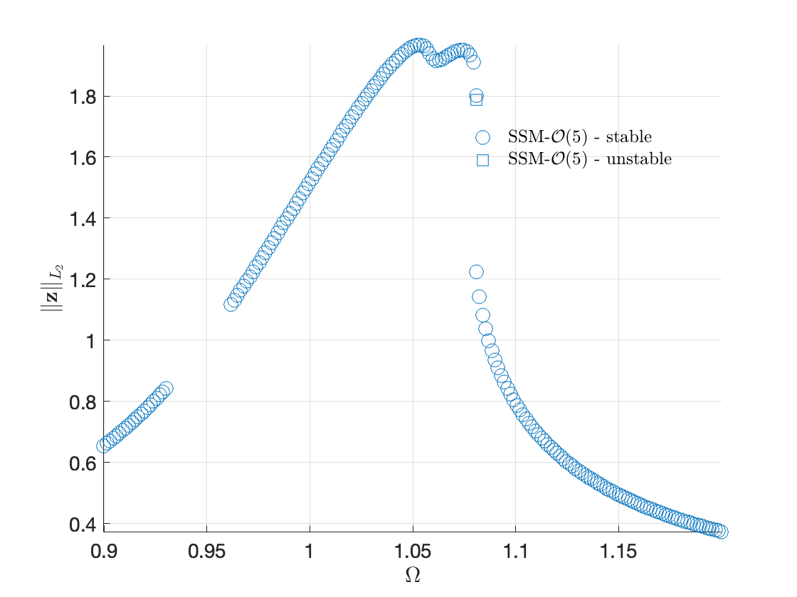 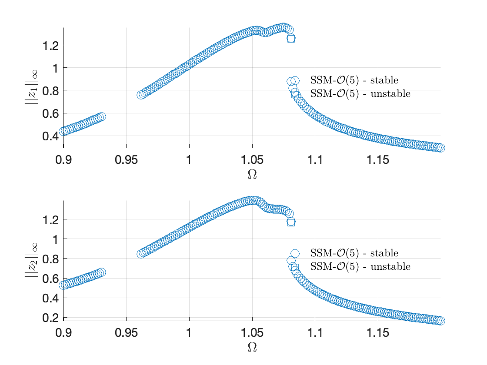<h2>Parametric excitation amplitude: mu = 0.083</h2> <pre class="codeoutput">*****************************************
Calculating FRC using SSM with master subspace: [1  2]
sigma_out = 1
sigma_in = 1
Manifold computation time at order 2 = 00:00:00
Estimated memory usage at order  2 = 7.90E-03 MB
Manifold computation time at order 3 = 00:00:00
Estimated memory usage at order  3 = 9.23E-03 MB
Manifold computation time at order 4 = 00:00:00
Estimated memory usage at order  4 = 1.14E-02 MB
Manifold computation time at order 5 = 00:00:00
Estimated memory usage at order  5 = 1.41E-02 MB
gamma = 
  -0.0150 + 0.0749i
  -0.0008 - 0.0081i

Total time spent on FRC computation upto O(5) = 00:00:17
</pre>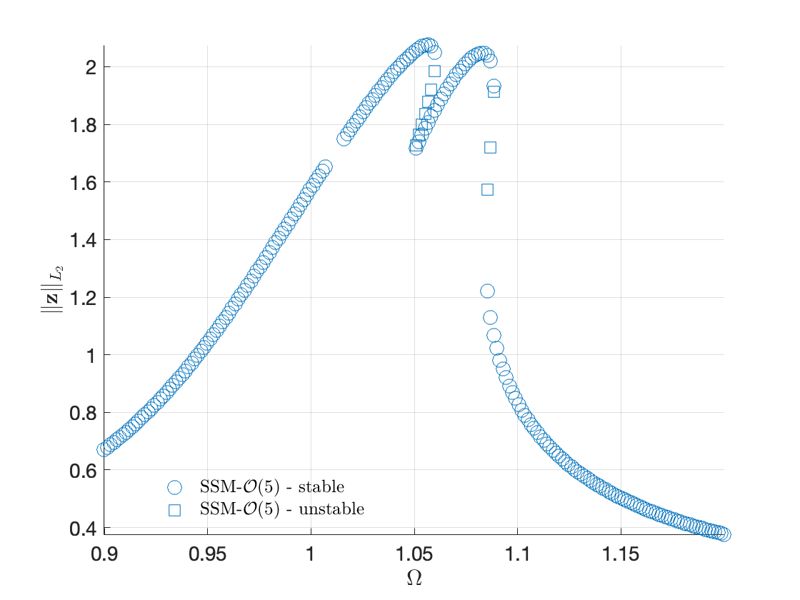 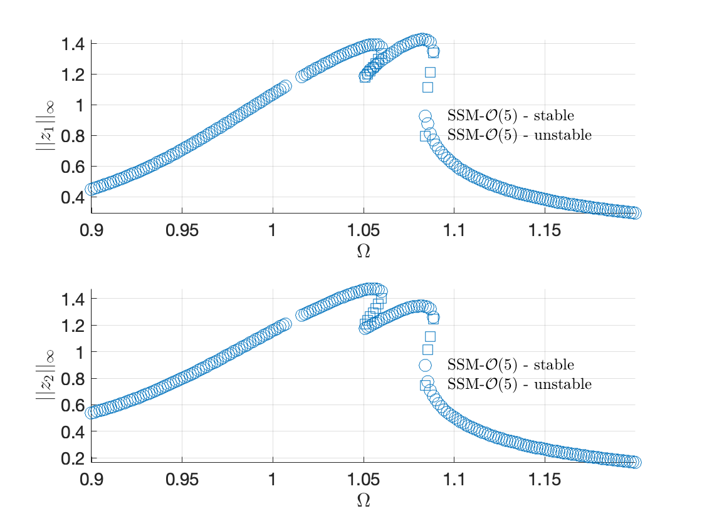<h2>Parametric excitation amplitude: mu = 0.116</h2> <pre class="codeoutput">*****************************************
Calculating FRC using SSM with master subspace: [1  2]
sigma_out = 1
sigma_in = 1
Manifold computation time at order 2 = 00:00:00
Estimated memory usage at order  2 = 7.90E-03 MB
Manifold computation time at order 3 = 00:00:00
Estimated memory usage at order  3 = 9.23E-03 MB
Manifold computation time at order 4 = 00:00:00
Estimated memory usage at order  4 = 1.14E-02 MB
Manifold computation time at order 5 = 00:00:00
Estimated memory usage at order  5 = 1.41E-02 MB
gamma = 
  -0.0150 + 0.0749i
  -0.0008 - 0.0081i

Total time spent on FRC computation upto O(5) = 00:00:17
</pre>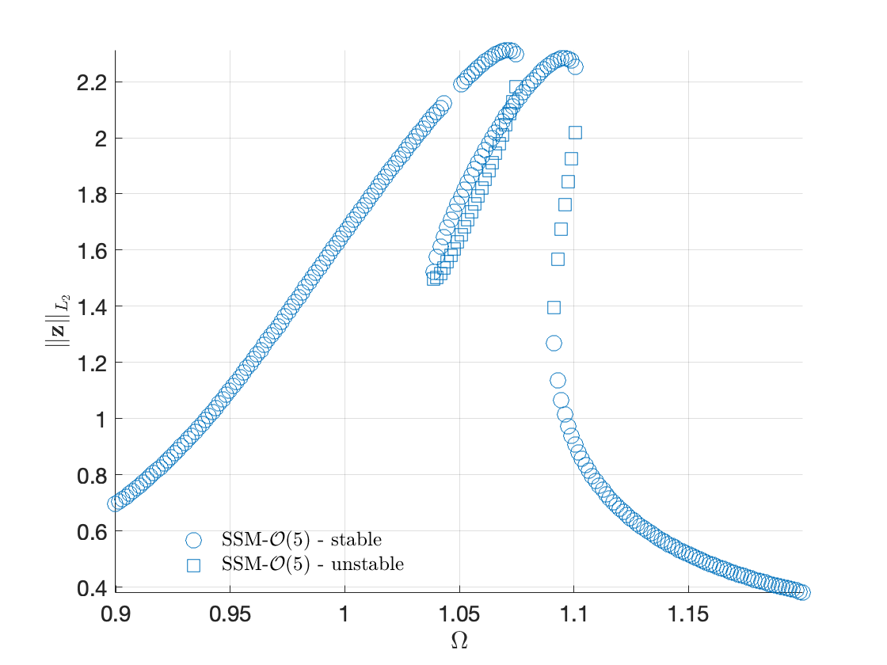 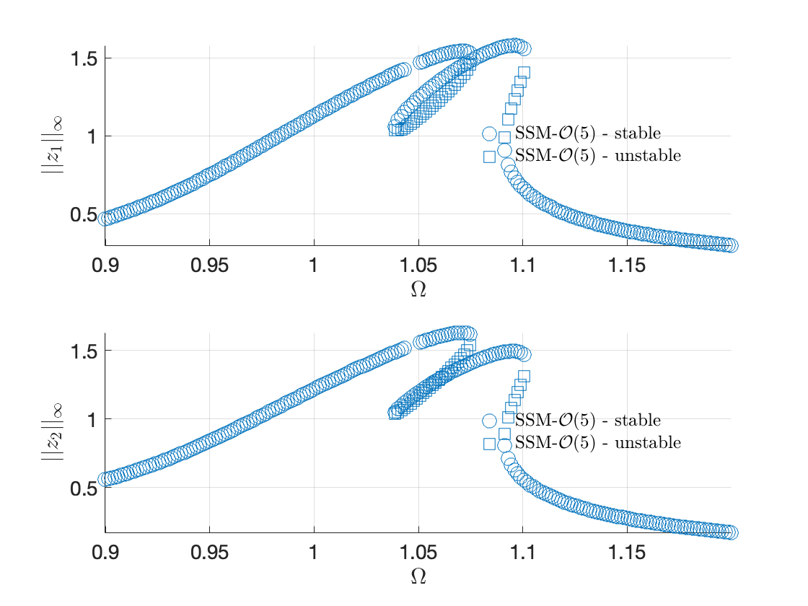 <h2>Parametric excitation amplitude: mu = 0.15</h2><pre class="codeoutput">*****************************************
Calculating FRC using SSM with master subspace: [1  2]
sigma_out = 1
sigma_in = 1
Manifold computation time at order 2 = 00:00:00
Estimated memory usage at order  2 = 7.90E-03 MB
Manifold computation time at order 3 = 00:00:00
Estimated memory usage at order  3 = 9.23E-03 MB
Manifold computation time at order 4 = 00:00:00
Estimated memory usage at order  4 = 1.14E-02 MB
Manifold computation time at order 5 = 00:00:00
Estimated memory usage at order  5 = 1.41E-02 MB
gamma = 
  -0.0150 + 0.0749i
  -0.0008 - 0.0081i

Total time spent on FRC computation upto O(5) = 00:00:17
</pre>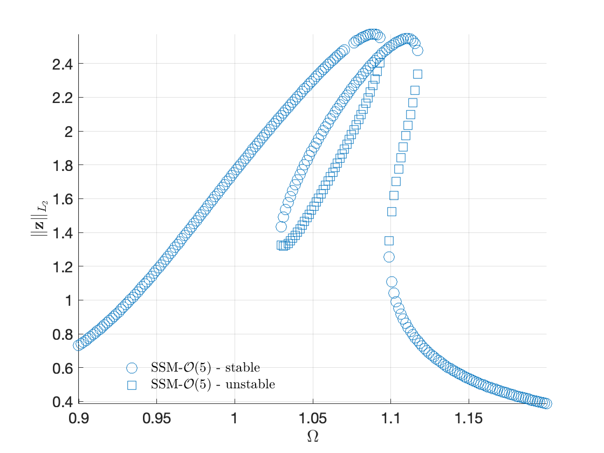 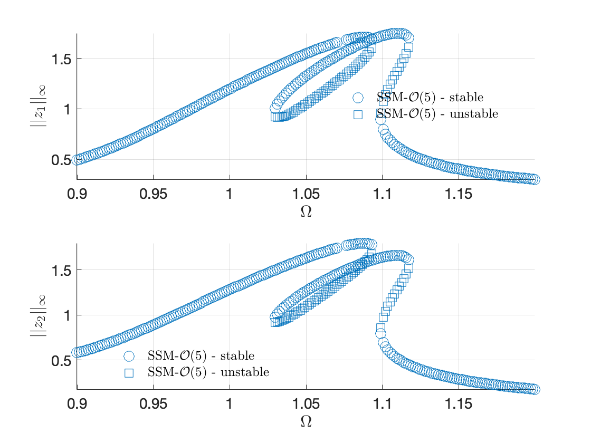 <h2 id="12">Verification: Collocation using <a href="https://sourceforge.net/p/cocotools/wiki/Home/">coco</a></h2><p>Dankowicz, H., &amp; Schilder, F. (2013).  <i>Recipes for Continuation,</i> SIAM Philadelphia. <a href="https://doi.org/10.1137/1.9781611972573">&lt;https://doi.org/10.1137/1.9781611972573</a>&gt;</p><pre class="codeinput">nCycles = 10;

coco = <a href="../../../../Library/Features/Wrappers/cocoWrapper/cocoWrapper.html">cocoWrapper</a>(DS, nCycles, outdof);
set(coco,<span class="string">'initialGuess'</span>,<span class="string">'forward'</span>)
set(coco.<a href="../../../../Library/Features/Options/Options.html">Options</a>, <span class="string">'NAdapt'</span>, 1);
set(coco.<a href="../../../../Library/Features/Options/Options.html">Options</a>,<span class="string">'ItMX'</span>,10,<span class="string">'NTST'</span>, 30,<span class="string">'PtMX'</span>,200); <span class="comment">%for convergence, smaller stepsize</span>

figure(figFRC)
hold <span class="string">on</span>;
startcoco = tic;
bds(ii).bd = coco.<a href="../../../../Library/Features/Wrappers/cocoWrapper/extract_FRC.html">extract_FRC</a>(OmegaRange);
timings(ii).cocoFRC = toc(startcoco);

ii = ii+1;
</pre><h2>Parametric excitation amplitude: mu = 0.05</h2><pre class="codeoutput">
 Run='FRC1': Continue primary family of periodic orbits.

    STEP   DAMPING               NORMS              COMPUTATION TIMES
  IT SIT     GAMMA     ||d||     ||f||     ||U||   F(x)  DF(x)  SOLVE
   0                          2.24e-01  1.41e+01    0.0    0.0    0.0
   1   1  3.59e-01  2.92e+00  1.43e-01  1.36e+01    0.0    0.0    0.0
   2   1  5.01e-01  1.95e+00  7.16e-02  1.32e+01    0.0    0.1    0.0
   3   1  9.02e-01  1.02e+00  7.06e-03  1.29e+01    0.0    0.1    0.0
   4   1  1.00e+00  1.14e-01  4.83e-06  1.28e+01    0.0    0.1    0.0
   5   1  1.00e+00  2.26e-04  2.61e-11  1.28e+01    0.1    0.2    0.0
   6   1  1.00e+00  1.32e-09  2.78e-15  1.28e+01    0.1    0.2    0.0

 STEP      TIME        ||U||  LABEL  TYPE         omega    po.period          eps         amp1         amp2
    0  00:00:00   1.2809e+01      1  EP      8.9995e-01   6.9817e+00   1.0000e+00   4.3857e-01   5.2810e-01
   10  00:00:03   1.4138e+01      2          9.5203e-01   6.5998e+00   1.0000e+00   6.9426e-01   7.8524e-01
   20  00:00:04   1.6963e+01      3          9.9993e-01   6.2836e+00   1.0000e+00   1.0269e+00   1.1159e+00
   30  00:00:06   1.9455e+01      4          1.0323e+00   6.0867e+00   1.0000e+00   1.2389e+00   1.3214e+00
   40  00:00:07   2.0409e+01      5          1.0491e+00   5.9891e+00   1.0000e+00   1.3177e+00   1.3909e+00
   50  00:00:09   2.0468e+01      6          1.0562e+00   5.9491e+00   1.0000e+00   1.3286e+00   1.3855e+00
   60  00:00:10   2.0225e+01      7          1.0591e+00   5.9326e+00   1.0000e+00   1.3173e+00   1.3535e+00
   70  00:00:12   2.0010e+01      8          1.0612e+00   5.9210e+00   1.0000e+00   1.3100e+00   1.3234e+00
   80  00:00:13   1.9983e+01      9          1.0642e+00   5.9040e+00   1.0000e+00   1.3163e+00   1.3050e+00
   90  00:00:14   2.0128e+01     10          1.0689e+00   5.8780e+00   1.0000e+00   1.3365e+00   1.3011e+00
  100  00:00:16   2.0246e+01     11          1.0747e+00   5.8462e+00   1.0000e+00   1.3525e+00   1.2957e+00
  110  00:00:18   1.9938e+01     12          1.0799e+00   5.8185e+00   1.0000e+00   1.3346e+00   1.2606e+00
  118  00:00:19   1.8983e+01     13  SN      1.0814e+00   5.8100e+00   1.0000e+00   1.2635e+00   1.1784e+00
  118  00:00:19   1.8983e+01     14  FP      1.0814e+00   5.8100e+00   1.0000e+00   1.2635e+00   1.1784e+00
  120  00:00:20   1.8515e+01     15          1.0813e+00   5.8107e+00   1.0000e+00   1.2279e+00   1.1388e+00
  129  00:00:22   1.5811e+01     16  FP      1.0797e+00   5.8194e+00   1.0000e+00   1.0079e+00   9.1038e-01
  129  00:00:22   1.5811e+01     17  SN      1.0797e+00   5.8194e+00   1.0000e+00   1.0079e+00   9.1038e-01
  130  00:00:22   1.5426e+01     18          1.0798e+00   5.8190e+00   1.0000e+00   9.7585e-01   8.7690e-01
  140  00:00:23   1.1422e+01     19          1.0952e+00   5.7371e+00   1.0000e+00   6.2413e-01   5.1707e-01
  149  00:00:25   8.2304e+00     20  EP      1.1999e+00   5.2362e+00   1.0000e+00   2.9323e-01   1.6614e-01
</pre>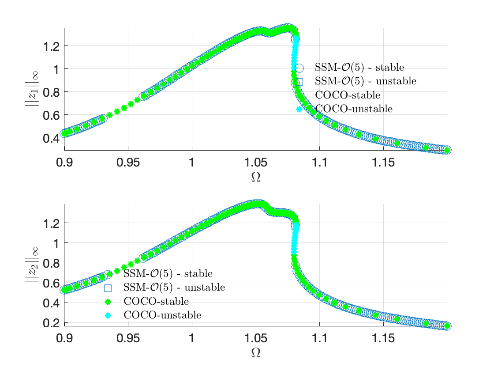 <h2>Parametric excitation amplitude: mu = 0.083</h2><pre class="codeoutput">
 Run='FRC1': Continue primary family of periodic orbits.

    STEP   DAMPING               NORMS              COMPUTATION TIMES
  IT SIT     GAMMA     ||d||     ||f||     ||U||   F(x)  DF(x)  SOLVE
   0                          2.32e-01  1.41e+01    0.0    0.0    0.0
   1   1  3.54e-01  2.92e+00  1.50e-01  1.36e+01    0.0    0.0    0.0
   2   1  4.98e-01  1.95e+00  7.53e-02  1.33e+01    0.0    0.0    0.0
   3   1  9.06e-01  1.01e+00  7.10e-03  1.30e+01    0.0    0.1    0.0
   4   1  1.00e+00  1.07e-01  4.19e-06  1.29e+01    0.0    0.1    0.0
   5   1  1.00e+00  1.92e-04  1.97e-11  1.29e+01    0.0    0.1    0.0
   6   1  1.00e+00  1.04e-09  2.81e-15  1.29e+01    0.0    0.1    0.0

 STEP      TIME        ||U||  LABEL  TYPE         omega    po.period          eps         amp1         amp2
    0  00:00:00   1.2938e+01      1  EP      8.9995e-01   6.9817e+00   1.0000e+00   4.5077e-01   5.3987e-01
   10  00:00:01   1.4285e+01      2          9.4962e-01   6.6165e+00   1.0000e+00   7.0773e-01   7.9766e-01
   20  00:00:03   1.7548e+01      3          9.9687e-01   6.3029e+00   1.0000e+00   1.0477e+00   1.1369e+00
   30  00:00:04   2.0730e+01      4          1.0349e+00   6.0715e+00   1.0000e+00   1.3031e+00   1.3901e+00
   40  00:00:06   2.3437e+01      5          1.0562e+00   5.9489e+00   1.0000e+00   1.3999e+00   1.4822e+00
   50  00:00:08   2.3168e+01      6          1.0624e+00   5.9140e+00   1.0000e+00   1.3831e+00   1.4581e+00
   52  00:00:09   2.3005e+01      7  FP      1.0626e+00   5.9133e+00   1.0000e+00   1.3730e+00   1.4449e+00
   52  00:00:09   2.3005e+01      8  SN      1.0626e+00   5.9133e+00   1.0000e+00   1.3730e+00   1.4449e+00
   60  00:00:10   2.2142e+01      9          1.0608e+00   5.9229e+00   1.0000e+00   1.3168e+00   1.3799e+00
   70  00:00:12   2.0936e+01     10          1.0560e+00   5.9498e+00   1.0000e+00   1.2389e+00   1.2850e+00
   80  00:00:13   1.9620e+01     11          1.0514e+00   5.9757e+00   1.0000e+00   1.1804e+00   1.2046e+00
   89  00:00:15   1.8939e+01     12  SN      1.0498e+00   5.9849e+00   1.0000e+00   1.1656e+00   1.1677e+00
   89  00:00:15   1.8939e+01     13  FP      1.0498e+00   5.9849e+00   1.0000e+00   1.1656e+00   1.1677e+00
   90  00:00:15   1.8942e+01     14          1.0499e+00   5.9846e+00   1.0000e+00   1.1678e+00   1.1657e+00
  100  00:00:17   1.9384e+01     15          1.0532e+00   5.9660e+00   1.0000e+00   1.2108e+00   1.1824e+00
  110  00:00:19   2.0370e+01     16          1.0613e+00   5.9205e+00   1.0000e+00   1.2918e+00   1.2415e+00
  120  00:00:20   2.1449e+01     17          1.0724e+00   5.8588e+00   1.0000e+00   1.3766e+00   1.3103e+00
  130  00:00:22   2.2007e+01     18          1.0833e+00   5.7998e+00   1.0000e+00   1.4218e+00   1.3425e+00
  140  00:00:23   2.1201e+01     19          1.0890e+00   5.7697e+00   1.0000e+00   1.3664e+00   1.2769e+00
  142  00:00:24   2.0982e+01     20  FP      1.0891e+00   5.7694e+00   1.0000e+00   1.3509e+00   1.2604e+00
  142  00:00:24   2.0982e+01     21  SN      1.0891e+00   5.7694e+00   1.0000e+00   1.3509e+00   1.2604e+00
  150  00:00:26   1.8371e+01     22          1.0862e+00   5.7846e+00   1.0000e+00   1.1585e+00   1.0619e+00
  156  00:00:27   1.5710e+01     23  FP      1.0843e+00   5.7945e+00   1.0000e+00   9.7536e-01   8.7535e-01
  156  00:00:27   1.5710e+01     24  SN      1.0843e+00   5.7945e+00   1.0000e+00   9.7535e-01   8.7534e-01
  160  00:00:28   1.3779e+01     25          1.0861e+00   5.7853e+00   1.0000e+00   8.3282e-01   7.3019e-01
  170  00:00:29   9.8146e+00     26          1.1244e+00   5.5880e+00   1.0000e+00   4.6243e-01   3.4952e-01
  175  00:00:30   8.2365e+00     27  EP      1.1999e+00   5.2362e+00   1.0000e+00   2.9470e-01   1.6792e-01
</pre>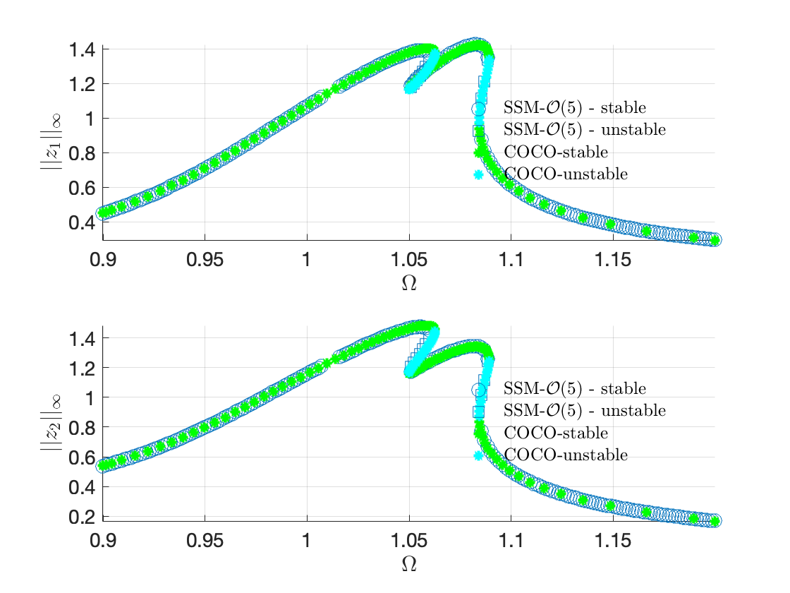<h2>Parametric excitation amplitude: mu = 0.116</h2> <pre class="codeoutput">
 Run='FRC1': Continue primary family of periodic orbits.

    STEP   DAMPING               NORMS              COMPUTATION TIMES
  IT SIT     GAMMA     ||d||     ||f||     ||U||   F(x)  DF(x)  SOLVE
   0                          2.34e-01  1.42e+01    0.0    0.0    0.0
   1   1  3.68e-01  2.80e+00  1.48e-01  1.38e+01    0.0    0.0    0.0
   2   1  5.35e-01  1.82e+00  6.88e-02  1.34e+01    0.0    0.0    0.0
   3   1  1.00e+00  8.75e-01  2.73e-04  1.32e+01    0.0    0.0    0.0
   4   1  1.00e+00  1.24e-02  8.65e-08  1.32e+01    0.0    0.1    0.0
   5   1  1.00e+00  4.96e-06  1.43e-14  1.32e+01    0.0    0.1    0.0
   6   1  1.00e+00  8.81e-13  3.09e-15  1.32e+01    0.0    0.1    0.0

 STEP      TIME        ||U||  LABEL  TYPE         omega    po.period          eps         amp1         amp2
    0  00:00:00   1.3157e+01      1  EP      8.9995e-01   6.9817e+00   1.0000e+00   4.7108e-01   5.5923e-01
   10  00:00:01   1.4511e+01      2          9.4615e-01   6.6408e+00   1.0000e+00   7.2809e-01   8.1655e-01
   20  00:00:03   1.8092e+01      3          9.9098e-01   6.3404e+00   1.0000e+00   1.0646e+00   1.1513e+00
   30  00:00:05   2.1975e+01      4          1.0329e+00   6.0833e+00   1.0000e+00   1.3628e+00   1.4488e+00
   40  00:00:06   2.4443e+01      5          1.0650e+00   5.8996e+00   1.0000e+00   1.5378e+00   1.6222e+00
   50  00:00:08   2.4783e+01      6          1.0793e+00   5.8217e+00   1.0000e+00   1.5604e+00   1.6417e+00
   55  00:00:09   2.4384e+01      7  FP      1.0807e+00   5.8142e+00   1.0000e+00   1.5311e+00   1.6113e+00
   55  00:00:09   2.4384e+01      8  SN      1.0807e+00   5.8142e+00   1.0000e+00   1.5311e+00   1.6113e+00
   60  00:00:10   2.3654e+01      9          1.0793e+00   5.8218e+00   1.0000e+00   1.4816e+00   1.5571e+00
   70  00:00:12   2.1738e+01     10          1.0707e+00   5.8684e+00   1.0000e+00   1.3482e+00   1.4149e+00
   80  00:00:13   1.9631e+01     11          1.0583e+00   5.9369e+00   1.0000e+00   1.1987e+00   1.2507e+00
   90  00:00:15   1.7919e+01     12          1.0465e+00   6.0041e+00   1.0000e+00   1.0757e+00   1.1050e+00
  100  00:00:16   1.7244e+01     13          1.0395e+00   6.0446e+00   1.0000e+00   1.0332e+00   1.0335e+00
  104  00:00:17   1.7346e+01     14  SN      1.0389e+00   6.0481e+00   1.0000e+00   1.0456e+00   1.0342e+00
  104  00:00:17   1.7346e+01     15  FP      1.0389e+00   6.0481e+00   1.0000e+00   1.0456e+00   1.0342e+00
  110  00:00:18   1.7950e+01     16          1.0407e+00   6.0373e+00   1.0000e+00   1.0998e+00   1.0699e+00
  120  00:00:20   1.9679e+01     17          1.0505e+00   5.9813e+00   1.0000e+00   1.2396e+00   1.1888e+00
  130  00:00:22   2.1749e+01     18          1.0661e+00   5.8935e+00   1.0000e+00   1.3982e+00   1.3319e+00
  140  00:00:23   2.3495e+01     19          1.0838e+00   5.7973e+00   1.0000e+00   1.5267e+00   1.4501e+00
  150  00:00:25   2.4224e+01     20          1.0984e+00   5.7205e+00   1.0000e+00   1.5788e+00   1.4950e+00
  160  00:00:27   2.3333e+01     21  SN      1.1035e+00   5.6937e+00   1.0000e+00   1.5169e+00   1.4272e+00
  160  00:00:27   2.3333e+01     22  FP      1.1035e+00   5.6937e+00   1.0000e+00   1.5169e+00   1.4272e+00
  160  00:00:27   2.3120e+01     23          1.1035e+00   5.6940e+00   1.0000e+00   1.5021e+00   1.4122e+00
  170  00:00:29   1.9864e+01     24          1.0971e+00   5.7270e+00   1.0000e+00   1.2687e+00   1.1739e+00
  180  00:00:31   1.5666e+01     25          1.0908e+00   5.7600e+00   1.0000e+00   9.4842e-01   8.4872e-01
  181  00:00:31   1.5572e+01     26  SN      1.0908e+00   5.7600e+00   1.0000e+00   9.4086e-01   8.4104e-01
  181  00:00:31   1.5572e+01     27  FP      1.0908e+00   5.7600e+00   1.0000e+00   9.4086e-01   8.4103e-01
  190  00:00:33   1.1125e+01     28          1.1059e+00   5.6817e+00   1.0000e+00   5.9579e-01   4.8862e-01
  199  00:00:34   8.2911e+00     29  EP      1.1999e+00   5.2363e+00   1.0000e+00   2.9779e-01   1.7099e-01
</pre>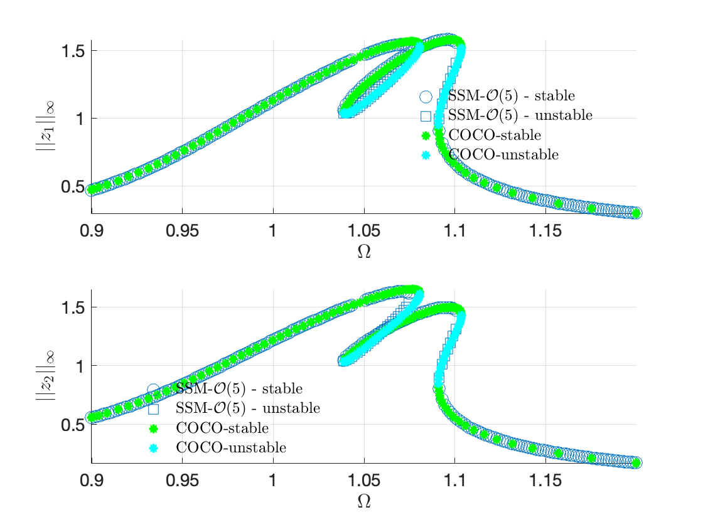 <h2>Parametric excitation amplitude: mu = 0.15</h2><pre class="codeoutput">
 Run='FRC1': Continue primary family of periodic orbits.

    STEP   DAMPING               NORMS              COMPUTATION TIMES
  IT SIT     GAMMA     ||d||     ||f||     ||U||   F(x)  DF(x)  SOLVE
   0                          2.45e-01  1.44e+01    0.0    0.0    0.0
   1   1  3.69e-01  2.82e+00  1.55e-01  1.40e+01    0.0    0.0    0.0
   2   1  5.44e-01  1.82e+00  7.05e-02  1.37e+01    0.0    0.0    0.0
   3   1  1.00e+00  8.50e-01  2.57e-04  1.35e+01    0.0    0.0    0.0
   4   1  1.00e+00  1.20e-02  8.72e-08  1.35e+01    0.0    0.1    0.0
   5   1  1.00e+00  5.43e-06  1.77e-14  1.35e+01    0.0    0.1    0.0
   6   1  1.00e+00  1.19e-12  3.26e-15  1.35e+01    0.0    0.1    0.0

 STEP      TIME        ||U||  LABEL  TYPE         omega    po.period          eps         amp1         amp2
    0  00:00:00   1.3473e+01      1  EP      8.9995e-01   6.9817e+00   1.0000e+00   4.9974e-01   5.8639e-01
   10  00:00:01   1.4831e+01      2          9.4254e-01   6.6662e+00   1.0000e+00   7.5660e-01   8.4300e-01
   20  00:00:03   1.8453e+01      3          9.8602e-01   6.3723e+00   1.0000e+00   1.0945e+00   1.1783e+00
   30  00:00:05   2.2561e+01      4          1.0286e+00   6.1084e+00   1.0000e+00   1.4077e+00   1.4905e+00
   40  00:00:06   2.5909e+01      5          1.0676e+00   5.8854e+00   1.0000e+00   1.6415e+00   1.7239e+00
   50  00:00:08   2.7415e+01      6          1.0930e+00   5.7483e+00   1.0000e+00   1.7398e+00   1.8218e+00
   60  00:00:09   2.7070e+01      7          1.1022e+00   5.7007e+00   1.0000e+00   1.7140e+00   1.7936e+00
   62  00:00:10   2.6888e+01      8  FP      1.1023e+00   5.6999e+00   1.0000e+00   1.7014e+00   1.7814e+00
   62  00:00:10   2.6888e+01      9  SN      1.1023e+00   5.6999e+00   1.0000e+00   1.7014e+00   1.7814e+00
   70  00:00:12   2.5428e+01     10          1.0984e+00   5.7204e+00   1.0000e+00   1.6007e+00   1.6777e+00
   80  00:00:13   2.2961e+01     11          1.0858e+00   5.7865e+00   1.0000e+00   1.4325e+00   1.5024e+00
   90  00:00:15   2.0172e+01     12          1.0685e+00   5.8802e+00   1.0000e+00   1.2344e+00   1.2943e+00
  100  00:00:16   1.7582e+01     13          1.0502e+00   5.9826e+00   1.0000e+00   1.0439e+00   1.0859e+00
  110  00:00:18   1.5963e+01     14          1.0351e+00   6.0701e+00   1.0000e+00   9.2395e-01   9.3700e-01
  120  00:00:20   1.6189e+01     15  SN      1.0291e+00   6.1056e+00   1.0000e+00   9.5456e-01   9.3334e-01
  120  00:00:20   1.6189e+01     16  FP      1.0291e+00   6.1056e+00   1.0000e+00   9.5456e-01   9.3334e-01
  120  00:00:20   1.6218e+01     17          1.0291e+00   6.1056e+00   1.0000e+00   9.5715e-01   9.3545e-01
  130  00:00:21   1.8188e+01     18          1.0355e+00   6.0675e+00   1.0000e+00   1.1240e+00   1.0773e+00
  140  00:00:23   2.0905e+01     19          1.0517e+00   5.9743e+00   1.0000e+00   1.3344e+00   1.2740e+00
  150  00:00:25   2.3633e+01     20          1.0733e+00   5.8540e+00   1.0000e+00   1.5346e+00   1.4637e+00
  160  00:00:26   2.5793e+01     21          1.0958e+00   5.7338e+00   1.0000e+00   1.6858e+00   1.6081e+00
  170  00:00:28   2.6786e+01     22          1.1138e+00   5.6414e+00   1.0000e+00   1.7531e+00   1.6701e+00
  180  00:00:30   2.6052e+01     23          1.1215e+00   5.6026e+00   1.0000e+00   1.7005e+00   1.6139e+00
  181  00:00:30   2.5908e+01     24  FP      1.1215e+00   5.6024e+00   1.0000e+00   1.6903e+00   1.6033e+00
  181  00:00:30   2.5908e+01     25  SN      1.1215e+00   5.6024e+00   1.0000e+00   1.6903e+00   1.6033e+00
  190  00:00:32   2.3268e+01     26          1.1162e+00   5.6292e+00   1.0000e+00   1.5106e+00   1.4196e+00
  200  00:00:33   1.9187e+01     27  EP      1.1041e+00   5.6909e+00   1.0000e+00   1.2172e+00   1.1230e+00
</pre>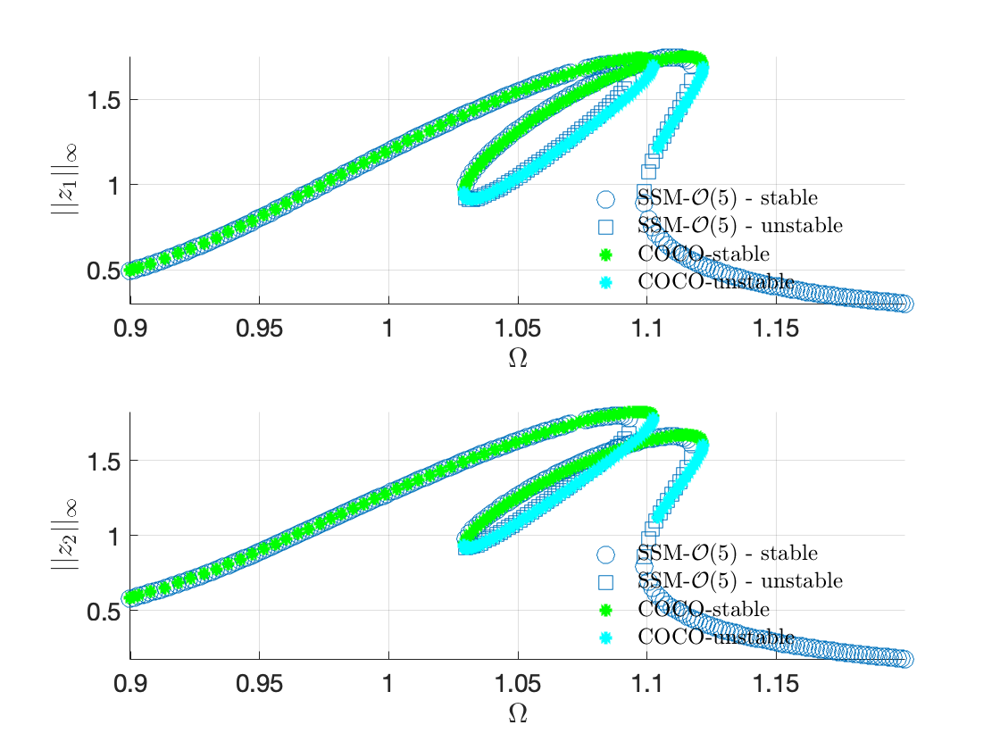 <pre class="codeinput"><span class="keyword">end</span>
</pre><pre class="codeoutput">
mus =

    0.0500    0.0833    0.1167    0.1500

</pre><pre class="codeinput"><span class="keyword">for</span> i = 1:numel(timings)
    timings(i)
<span class="keyword">end</span>

PaperFigureSweep(FRCs,bds,1,order,mus)
</pre><pre class="codeoutput">
ans = 

  struct with fields:

     FRCSSM: 19.9109
    cocoFRC: 28.1563


ans = 

  struct with fields:

     FRCSSM: 18.8168
    cocoFRC: 32.9869


ans = 

  struct with fields:

     FRCSSM: 18.3504
    cocoFRC: 36.6622


ans = 

  struct with fields:

     FRCSSM: 18.0405
    cocoFRC: 35.8487

</pre>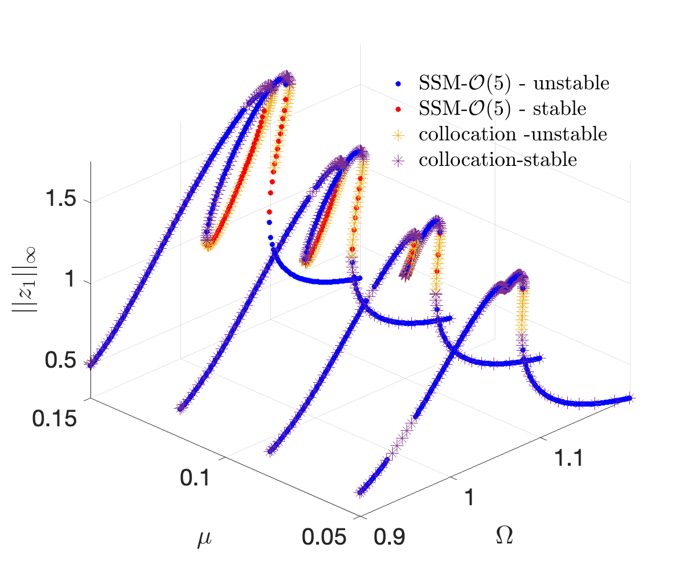 <p class="footer"><br/><a href="https://www.mathworks.com/products/matlab/">Published with MATLAB® R2023a</a><br/></p></div><!--
##### SOURCE BEGIN #####
%% Parametric Amplifiers
%
%%
% The model features two oscillators, each of which resembels the model of a 
% parametric amplifier as presented by 
% 
% Li, D. & Shaw, S. W. The effects of nonlinear damping on degenerate parametric 
% amplification.NonlinearDynamics 2020 102:4102,2433–2452 (4 Dec. 2020) https://doi.org/10.1006/jsvi.1995.0547 
% 
% The model is extended to a two- dimensional setting 
% 
% <<model.png>>
% 
% The parametric excitation of the linear stiffness is of the form $k(t) = k(1 
% + \mu \cos (\Omega t))$. The system is subject to nonlinear stiffness and damping 
% forces via $\kappa$ and $\gamma$.
%% 
% *system parameters*

clear all
mus = [0.05, 0.05+1/3*0.1, 0.05+2/3*0.1 0.15]
psi = pi/4;

ii = 1;

for mu = mus
[ M,C,K,fnl,fext] = build_model(psi,mu);
%% Dynamical system setup
% We consider the forced  and parametrically excited system
% 
% $$\mathbf{M}\ddot{\mathbf{x}}+\mathbf{C}\dot{\mathbf{x}}+\mathbf{K}\mathbf{x}+\mathbf{f}(\mathbf{x},\dot{\mathbf{x}})=\epsilon\mathbf{g}(\mathbf{x},\dot{\mathbf{x}},\Omega 
% t),$$
% 
% which can be written in the first-order form as 
% 
% $$\mathbf{B}\dot{\mathbf{z}}=\mathbf{Az}+\mathbf{F}(\mathbf{z})+\epsilon\mathbf{G}(\mathbf{z},\phi)$$
% 
% $$\dot{\mathbf{\phi}}=\mathbf{\Omega}$$
% 
% where
% 
% $\mathbf{z}=\left[\begin{array}{c}\mathbf{x}\\\dot{\mathbf{x}}\end{array}\right],\quad\mathbf{A}=\left[\begin{array}{cc}-\mathbf{K} 
% & \mathbf{0}\\\mathbf{0} & \mathbf{M}\end{array}\right],\mathbf{B}=\left[\begin{array}{cc}\mathbf{C} 
% & \mathbf{M}\\\mathbf{M} & \mathbf{0}\end{array}\right],\quad\quad\mathbf{F}(\mathbf{z})=\left[\begin{array}{c}\mathbf{-\mathbf{f}(\mathbf{x},\dot{\mathbf{x}})}\\\mathbf{0}\end{array}\right],\quad\mathbf{G}(\mathbf{z},\mathbf{\phi})=\left[\begin{array}{c}\mathbf{g}(\mathbf{x, 
% \dot{x}},\phi)\\\mathbf{0}\end{array}\right]$.

% Dynamical System
DS = <a href="../../../../Library/DynamicalSystem/DynamicalSystem.html">DynamicalSystem</a>();
set(DS,'M',M, 'C', C, 'K',K,'fnl',fnl);
set(DS.<a href="../../../../Library/Features/Options/Options.html">Options</a>,'Emax',5,'Nmax',10,'notation','multiindex')


%% Add forcing
% The dynamical system is forced externally and parametrically with 
% 
% $\mathbf{g(x},\Omega 
% t) = \mu\left[\begin{array}{cc} k & 0 \\ 0 &  k \end{array}\right] \cos(2\Omega 
% t) \mathbf{x} +\left[\begin{array}{cc}   0 \\ q \cos (\Omega t + \psi)   \end{array}\right]$
% 
% Parameters are chosen as $\epsilon = 1, q = 0.2$

% External forcing
DS.<a href="../../../../Library/DynamicalSystem/add_forcing.html">add_forcing</a>(fext,1);
%% Linear Modal Analysis 

% Analyse spectrum
[V,D,W] = DS.<a href="../../../../Library/DynamicalSystem/linear_spectral_analysis.html">linear_spectral_analysis</a>();

%% 
% *Choose Master subspace (perform resonance analysis)*

S = <a href="../../../../Library/SSM/SSM.html">SSM</a>(DS);
set(S.<a href="../../../../Library/Features/Options/Options.html">Options</a>, 'reltol', 0.5,'notation','multiindex')

%Choose Master subspace
masterModes = [1,2];
S.<a href="../../../../Library/Manifold/choose_E.html">choose_E</a>(masterModes);
%% Forced response curves using SSMs
% Obtaining *forced response curve* in reduced-polar coordinate

order = 5; % Approximation order
%% 
% setup options

outdof = [1,2];
set(S.<a href="../../../../Library/Features/Options/Options.html">Options</a>, 'reltol', 0.5,'IRtol',0.02,'notation', 'multiindex','contribNonAuto',true)
set(S.<a href="../../../../Library/Features/Options/Options.html">FRCOptions</a>, 'nt', 2^7, 'nRho', 200, 'nPar', 200, 'nPsi', 200, 'rhoScale', 6 )
set(S.<a href="../../../../Library/Features/Options/Options.html">FRCOptions</a>, 'method','level set') % 'continuation ep'
set(S.<a href="../../../../Library/Features/Options/Options.html">FRCOptions</a>, 'outdof',outdof)

%% 
% choose frequency range around the master mode frequency

omega0 = imag(S.E.spectrum(1));
OmegaRange =omega0*[0.9 1.2];

%Omega dependence of non-autonomous coefficients
set(S.<a href="../../../../Library/Features/Options/Options.html">FRCOptions</a>,'omDepNonAuto',true)

%% 
% Extract forced response curve

startFRCSSM = tic;
FRCs(ii).FRC  = S.<a href="../../../../Library/Features/Wrappers/cocoWrapper/extract_FRC.html">extract_FRC</a>('freq',OmegaRange,order);
timings(ii).FRCSSM = toc(startFRCSSM);
figFRC = gcf;
%% Verification: Collocation using <https://sourceforge.net/p/cocotools/wiki/Home/ coco>
% Dankowicz, H., & Schilder, F. (2013).  _Recipes for Continuation,_ SIAM Philadelphia. 
% <https://doi.org/10.1137/1.9781611972573 https://doi.org/10.1137/1.9781611972573>

nCycles = 10;

coco = <a href="../../../../Library/Features/Wrappers/cocoWrapper/cocoWrapper.html">cocoWrapper</a>(DS, nCycles, outdof);
set(coco,'initialGuess','forward')
set(coco.<a href="../../../../Library/Features/Options/Options.html">Options</a>, 'NAdapt', 1);
set(coco.<a href="../../../../Library/Features/Options/Options.html">Options</a>,'ItMX',10,'NTST', 30,'PtMX',200); %for convergence, smaller stepsize

figure(figFRC)
hold on;
startcoco = tic;
bds(ii).bd = coco.<a href="../../../../Library/Features/Wrappers/cocoWrapper/extract_FRC.html">extract_FRC</a>(OmegaRange);
timings(ii).cocoFRC = toc(startcoco);

ii = ii+1;
end
%%
for i = 1:numel(timings)
    timings(i)
end

PaperFigureSweep(FRCs,bds,1,order,mus)
##### SOURCE END #####
--></body></html>